The drunk of Gulele
21.7-37.1s

በጉለሌ የነበረው የታወቀ ዶሮ ነጋዴ ማነው ብለው ከገፈርሳ እስከ ደጃዝማች ይገዙ ሠፈር ለጠየቁ ሰዎች፤ ተበጀ፣ ሰካራሙ ተበጀ፣ ዶሮ ነጋዴው ተበጀ ነው ብለው ይነግሯቸዋል።
If people from Gefersa to Dejazmach Yigezu's quarter asked who the famous chicken trader of Gulele was, they were told: Tebeje. Tebeje the drunk. Tebeje the chicken trader.
Starts and ends on these words? ☐ yes ☐ cut early ☐ cut late
Laughing with everyone
50.8-61.6s
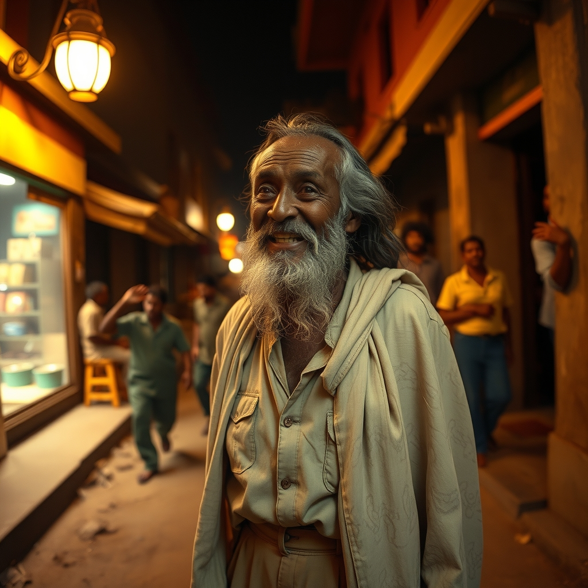
ቢያውቀውም ባያውቀውም ላገኘው ሁሉ ማታ ሰላምታ ይሰጣል። ቢያውቀውም ባያውቀውም ካገኘው ሁሉ ጋራ ማታ ይስቃል።
Whether he knew them or not, at night he greeted everyone. Whether he knew them or not, at night he laughed with everyone.
Starts and ends on these words? ☐ yes ☐ cut early ☐ cut late
Gossip at the coffee fire
83.7-104.6s
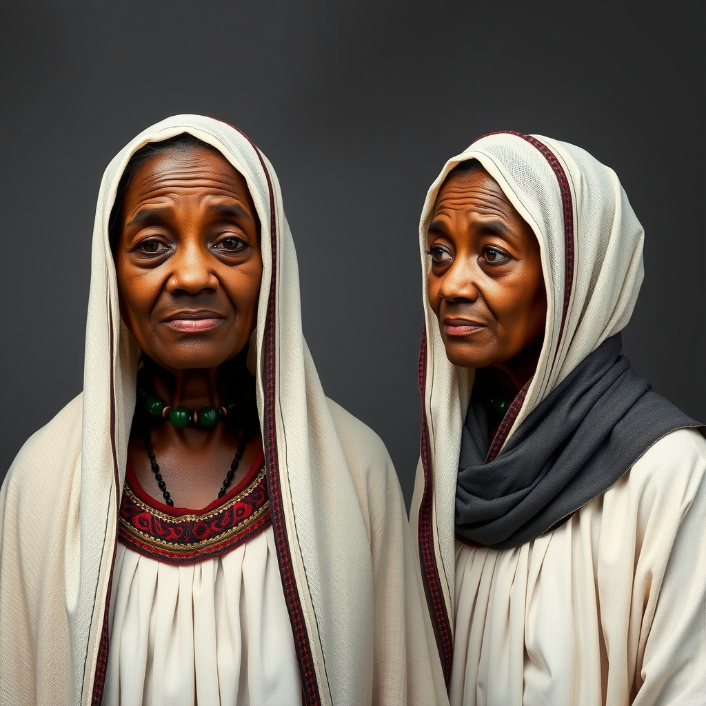
ቡን በተፈላ ጊዜ በጉለሌ በየምድጃው ሥር የሰካራም ተረት የተጫወተው ሰው ሁሉ የተናገረ በተበጀ ላይ ነው። መልኩን አይተውት ያላወቁ ባልቴቶች እንኳ ከፍንጃል ቡኑን ፉት እያሉ የሌላውን ሰካራም ተረት በተበጀ ላይ ይላክኩት ነበር።
When coffee was brewed by every hearth in Gulele, every drunkard's tale anyone told was told about Tebeje. Even old widows who had never seen his face sipped from their cups and pinned other drunks' stories on him.
Starts and ends on these words? ☐ yes ☐ cut early ☐ cut late
A stranger out of the eucalyptus
105.0-122.8s
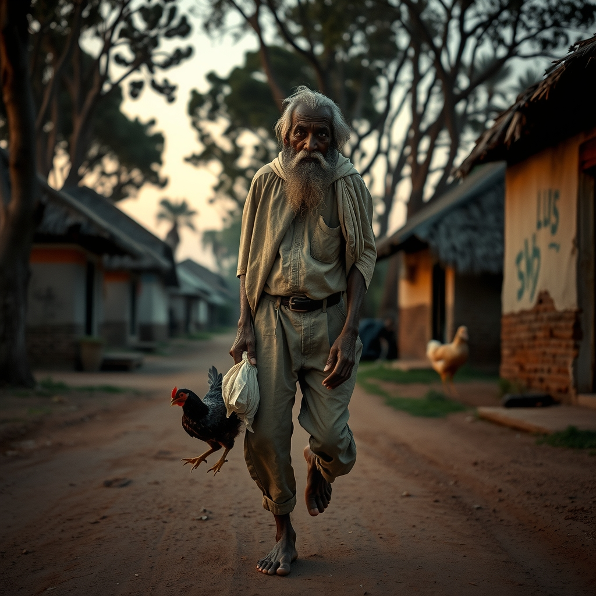
ይህ እውነት ነበር። በጠባዩ ከተባለበት የባሰ ሰካራም ይሁን ወይም የተሻለ የጉለሌ ባሕር ዛፍ ውስጥ ወጥቶ አንድ አዲስ እንግዳ ሰው ሆኖ ለአዲስ አበባ ታይቷል።
This was true. Whether worse than they said or better, he came out of Gulele's eucalyptus and appeared to Addis Ababa as a strange new man.
Starts and ends on these words? ☐ yes ☐ cut early ☐ cut late
The house past the bridge
123.2-145.5s
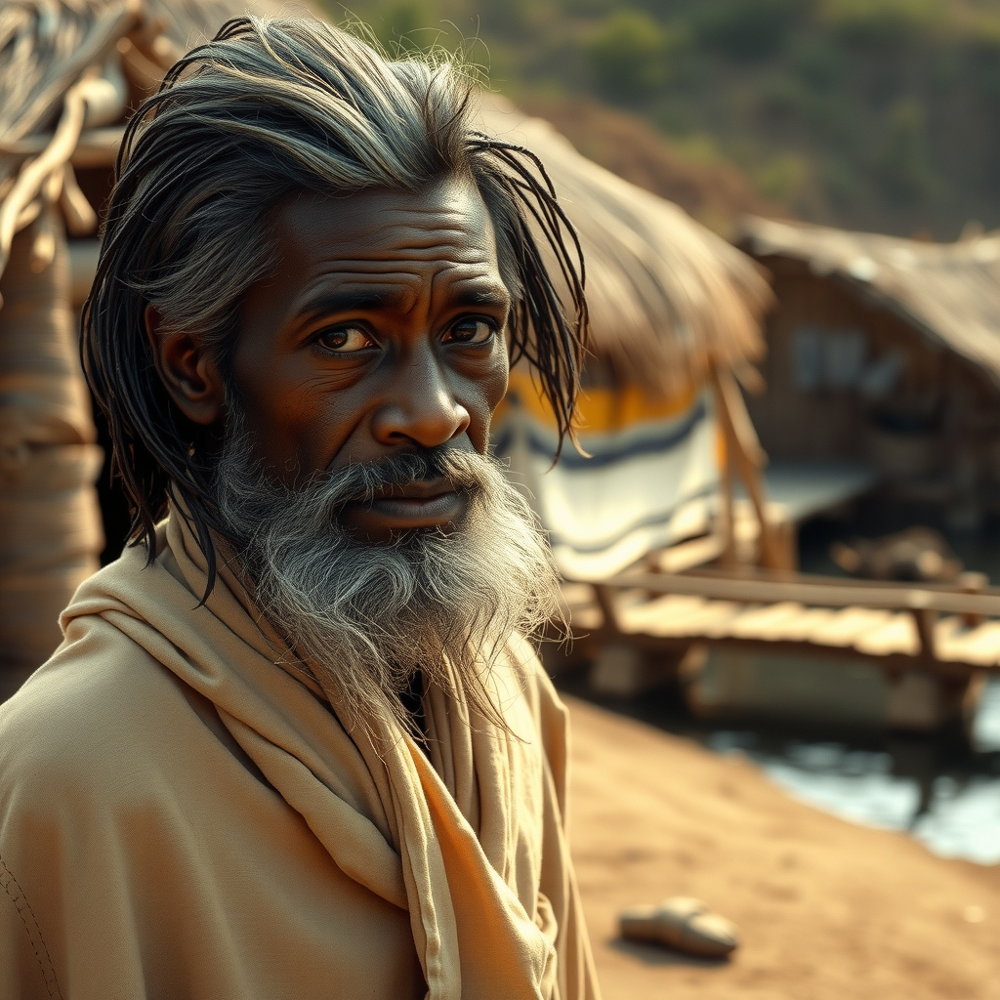
ከዱሮው የእንጨት ጉምሩክ አጠገብ ወደ ምሥራቅ ሲል ካለው ወንዝ ማዶ ድልድዩን ወደ ምሥራቅ ተሻግሮ መጀመሪያ የሚገኘው አነስተኛ ሳር ክዳን ቤት የተበጀ ቤት ማለት ያ ነው። በዚያው በቤቱ በዚያው በጉለሌ በሠፈሩ ኖረ።
By the old timber customs, heading east, across the bridge over the river, the first small thatched hut you reach: that is Tebeje's house. There, in that house, in Gulele, he lived.
Starts and ends on these words? ☐ yes ☐ cut early ☐ cut late
He built his own house
146.2-156.6s

እንጨቱን ተሸክሞ አፈሩን ቆፍሮ ቤቱን የሰራው እርሱ ነው። ዋጋ ከፍሎ አስከድኖታል። ተበጀን ኩራት ተሰማው።
He carried the timber and dug the earth; he built the house himself and paid for the thatch. Tebeje felt proud.
Starts and ends on these words? ☐ yes ☐ cut early ☐ cut late
The tear
157.3-168.2s
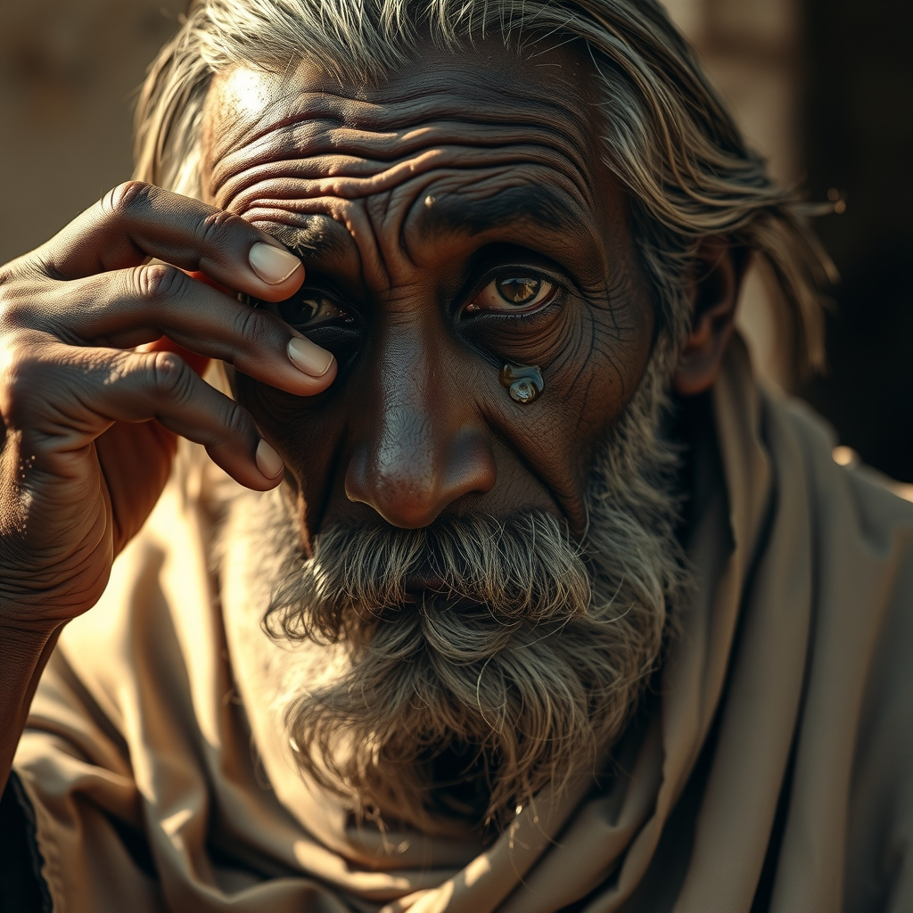
ቆይቶ ደግሞ ዓይኖቹ እንባ አዘሉ። በጉንጩም የእንባ ዘለላ ወረደው። በግራ እጁ መዳፍ ከጉንጩ የተንከባለለውን እንባ ጨፈለቀው።
Then his eyes filled with tears. A tear ran down his cheek, and he crushed it with the palm of his left hand.
Starts and ends on these words? ☐ yes ☐ cut early ☐ cut late
The drunkard of Gulele's house
210.8-221.3s

‹ዶሮ ነጋዴው የትኛው ነው?› ሲባል ‹ያ የጉለሌው ሰካራም› ሊባል ነው። አወይ! እኔ ተበጀ፤ ተበላሽቻለሁ አለና ደነገጠ።
'Which chicken trader?' 'That drunkard of Gulele.' 'Oh! Me, Tebeje, I am ruined,' he said, shaken.
Starts and ends on these words? ☐ yes ☐ cut early ☐ cut late
For the honour of the house
222.6-229.2s
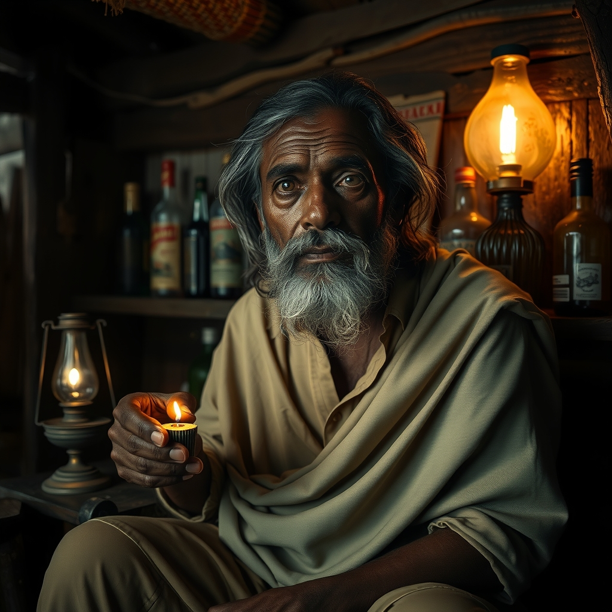
ከዚህ በኋላ ስለ ቤቱ ክብር እንኳ መጠጥ መተው ይገባኛል አለ።
'From now on, for the honour of this house at least, I must quit drinking,' he said.
Starts and ends on these words? ☐ yes ☐ cut early ☐ cut late
Gulele is asleep
376.9-383.4s
ጉለሌ ተኝቷልና ከዚሁ ከባሕር ዛፍ ሥር ቁጭ ብዬ ብጠጣ የሚታዘበኝ የለም አለና አሰበ።
'Gulele is asleep. If I sit under this eucalyptus and drink, no one will see me,' he thought.
Starts and ends on these words? ☐ yes ☐ cut early ☐ cut late
Half the bottle
424.7-428.9s
‹ግማሹን ያህል ሰርጉጀዋለሁ› አለና በሳቅ ፈነዳ።
'I've slurped about half of it,' he said, and burst out laughing.
Starts and ends on these words? ☐ yes ☐ cut early ☐ cut late
The flood
589.1-596.7s
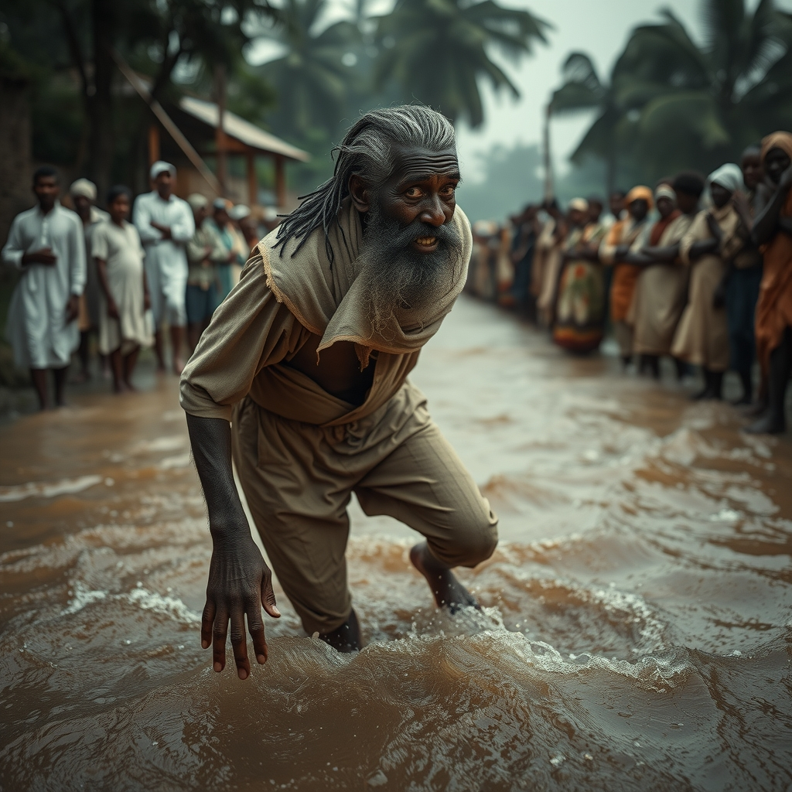
‹ገረዲቱን እናንተ በመጨረሻ ያያችኋት ወዴት ነው?› ብሎ ጠየቀና እየጠለቀ በዋና ይፈልግ ጀመር።
'Where did you last see the maid?' he asked, and began diving and swimming to find her.
Starts and ends on these words? ☐ yes ☐ cut early ☐ cut late
It was a pig
662.5-669.4s
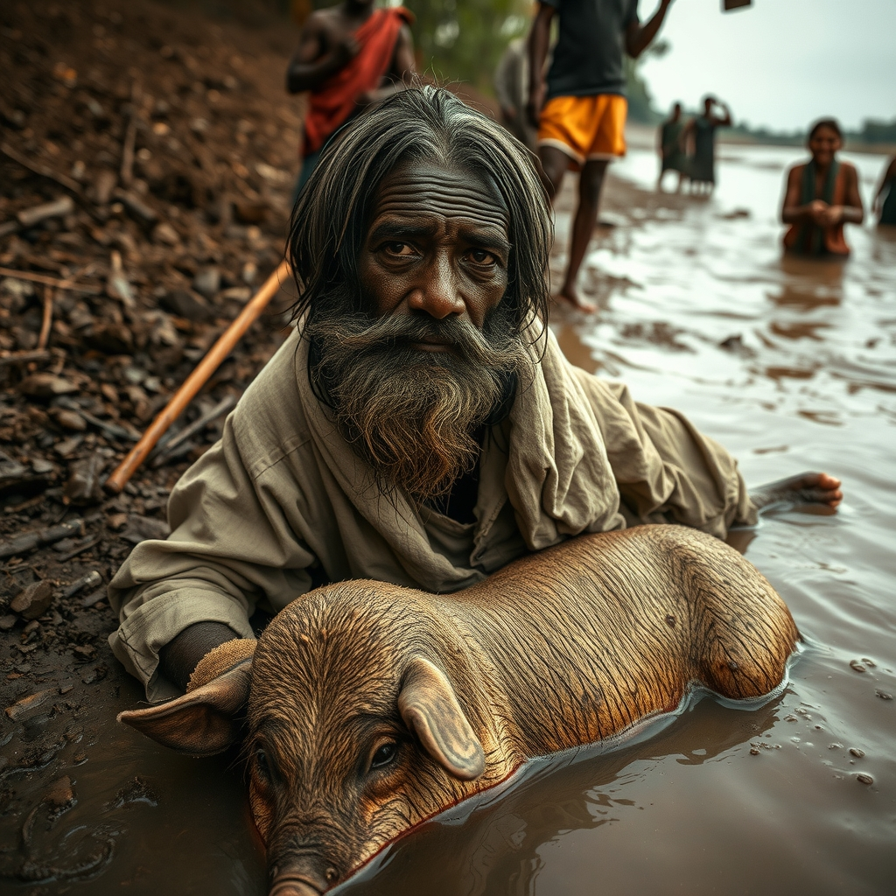
‹ሴትዮዋ ድናለች?› ብሎ በርኅራሄ ድምፅ ጠየቃቸው። አንዱ ቀረበና ‹አሳማ ነው ያወጣኸው› አለው።
'Is the woman saved?' he asked tenderly. One came closer: 'It's a pig you pulled out.'
Starts and ends on these words? ☐ yes ☐ cut early ☐ cut late
A drunk's good deeds
719.7-728.6s
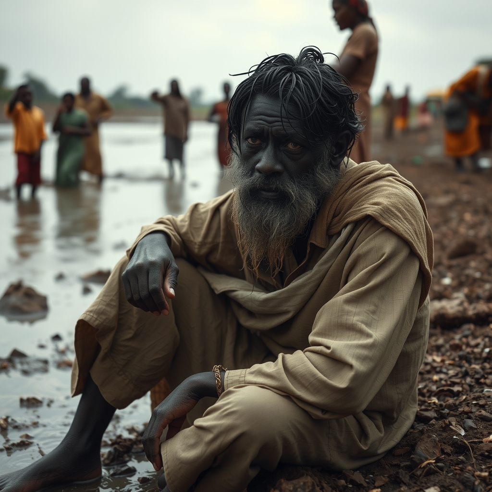
መልካሙ የሰማዕትነት ሥራው ሁሉ ደግሞ እንዲሁ ርካሽ ሆኖ የሚቆጠር የሆነበት ዘወትር የሚሰክር ሆኖ ስለታወቀ ነው።
All his good, brave deeds were counted cheap, because he was known to be always drunk.
Starts and ends on these words? ☐ yes ☐ cut early ☐ cut late
Five months sober
940.0-947.6s
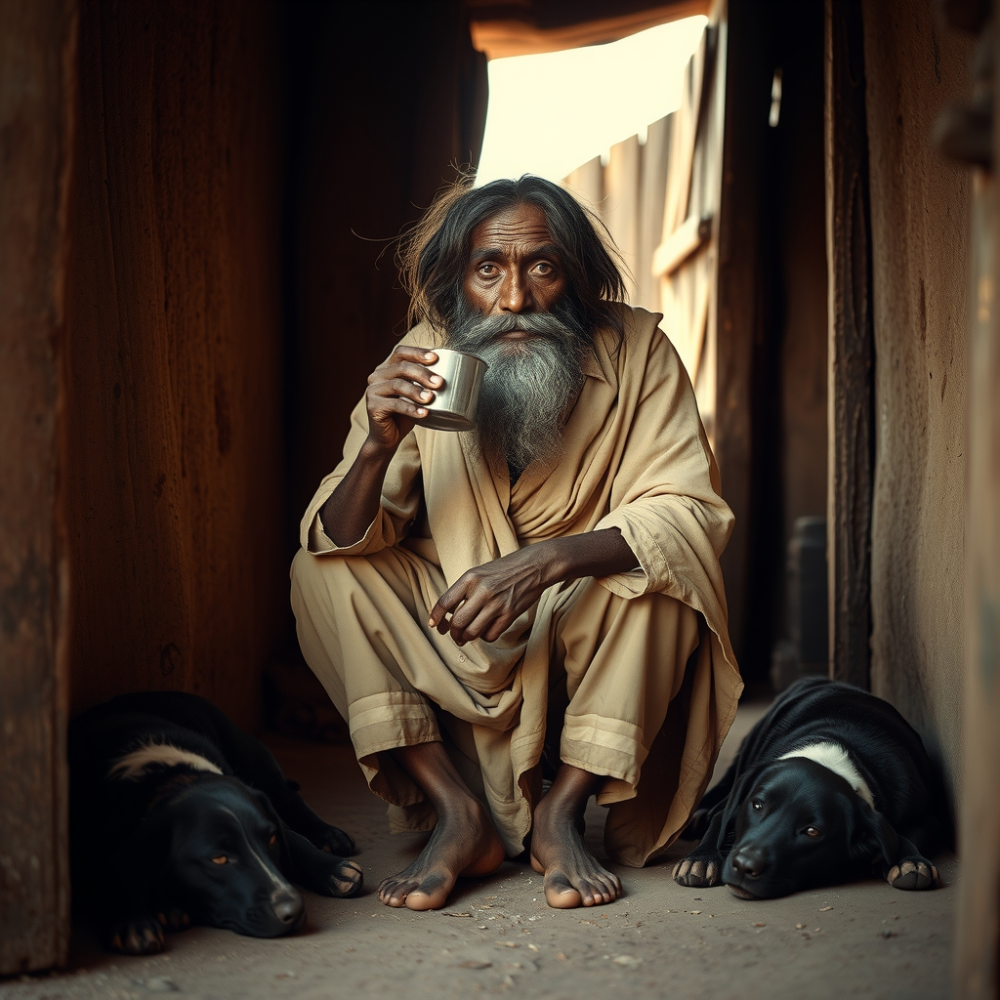
ቤቱን ከሰራ ከአምስት ወራቶች በኋላ ጀምሮ ተበጀ መጠጥ ከቶ አልጠጣም።
From five months after he built the house, Tebeje never drank at all.
Starts and ends on these words? ☐ yes ☐ cut early ☐ cut late
Just today, just a little
1082.8-1091.1s
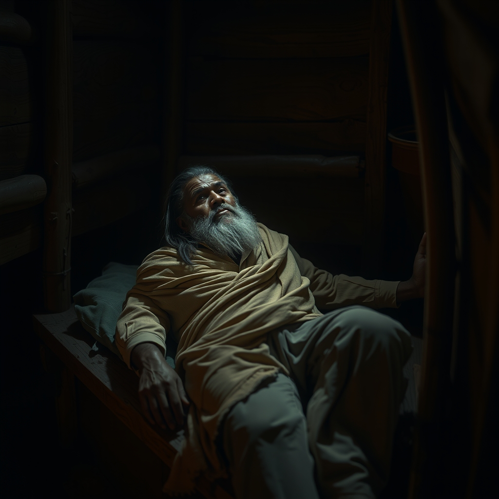
ሹልክ ብዬ ዛሬ ብቻ፣ ጥቂት ብቻ፣ አንድ ጊዜ ብቻ፣ እኔ ብቻ፣ ብጠጣ ምን ይጐዳል
'If I slip out, just today, just a little, just once, just me... what harm could it do?'
Starts and ends on these words? ☐ yes ☐ cut early ☐ cut late
Carried like a leader
1190.7-1196.4s

እንደተወደደ መሪ በጫንቃቸው ላይ ተሸክመው እየተቀባበሉት በእልልታ ጮሁ።
Like a beloved leader they carried him on their shoulders, passing him along, cheering.
Starts and ends on these words? ☐ yes ☐ cut early ☐ cut late
The railway
1338.2-1351.2s

ከኋላው በኩል ትልቅ ኀይል መታው። ከፊቱ በኩል የቀበሮ ጉድጓድ ተቀበለው። እግሩ እንደ ብርጭቆ ነከተ።
A great force struck him from behind. A fox hole caught him in front. His leg shattered like glass.
Starts and ends on these words? ☐ yes ☐ cut early ☐ cut late
The doctor
1497.4-1505.7s
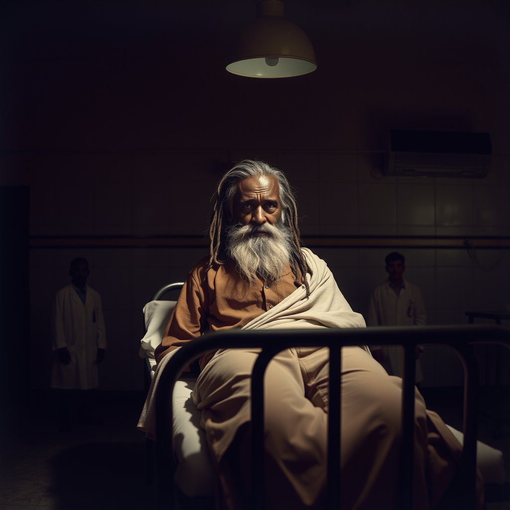
ሌላው ግን ‹ሁለተኛ እንዳይሰክር ከቂጡ አስጠግቼ እቆርጠዋለሁ› አለና ከቂጡ አስጠግቶ ቆረጠው።
But another said, 'So he never drinks again, I'll cut it off at the hip,' and he did.
Starts and ends on these words? ☐ yes ☐ cut early ☐ cut late
The dogs wake him
1523.0-1531.1s
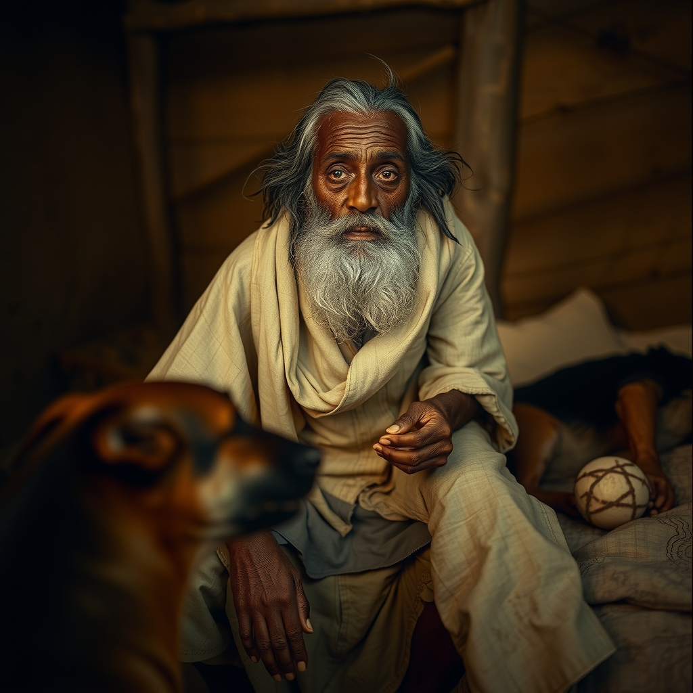
በዚህ ጊዜ በአጥንት የተጣሉት ውሾች በላዩ ላይ ተረፋረፉበትና በድንጋፄ ከእንቅልፉ ነቃ።
Just then the dogs fighting over a bone tumbled onto him, and he woke in terror.
Starts and ends on these words? ☐ yes ☐ cut early ☐ cut late
How many legs do I have?
1549.0-1557.5s

‹ስንት እግር ነው ያለኝ?› ብሎ ጠየቃቸው። ወይዘሮ ጥሩነሽም ‹ዱሮ ስንት እግር ነበረዎ ጌታ?› ብለው ጠየቁት።
'How many legs do I have?' he asked. Weyzero Tiruneshe replied, 'How many did you have before, sir?'
Starts and ends on these words? ☐ yes ☐ cut early ☐ cut late
Two legs, sir
1583.7-1593.2s
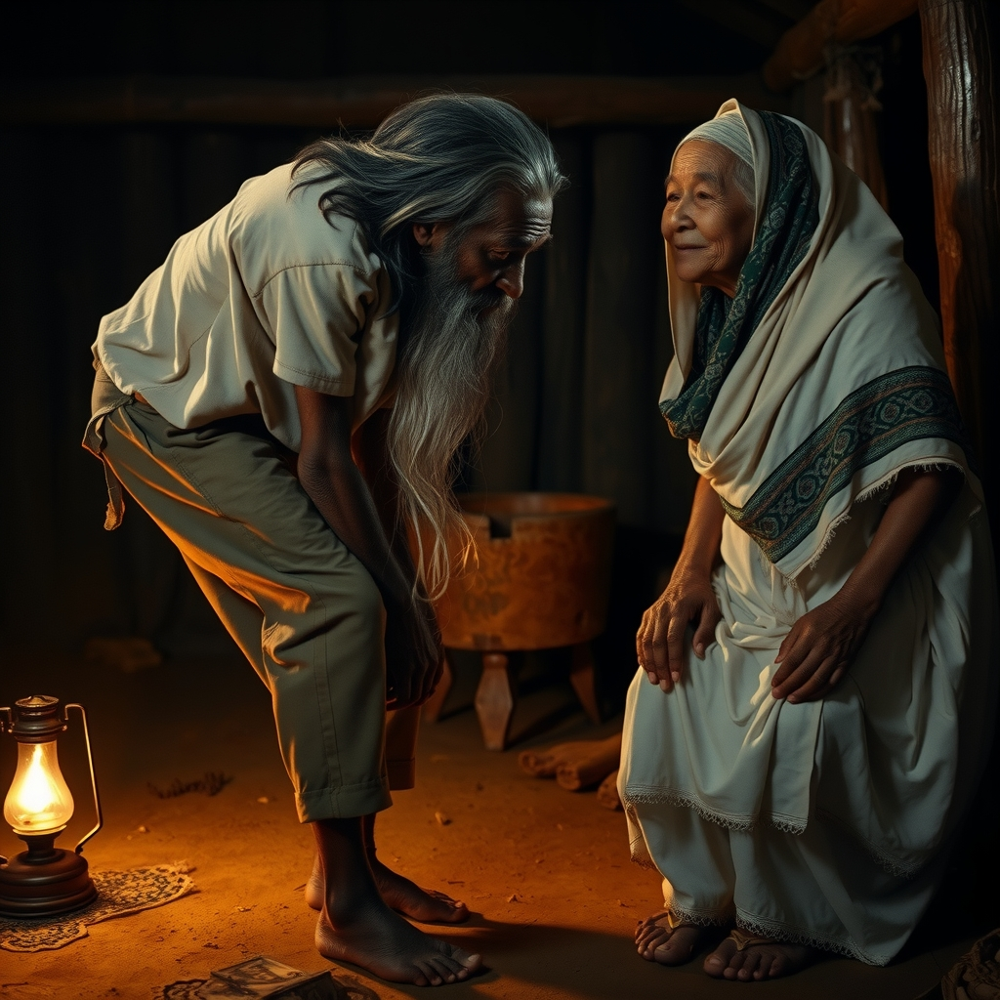
‹በእርግጥ ሁለት እግሮች አሉዎት ጌታ› አሉት። ተበጀ እግሩን አጐንብሶ ለመሳም ሞከረና ራቀው።
'Truly, you have two legs, sir,' she said. Tebeje bent to kiss his leg, but it was too far.
Starts and ends on these words? ☐ yes ☐ cut early ☐ cut late
Nights of such vows pass
1593.7-1608.4s
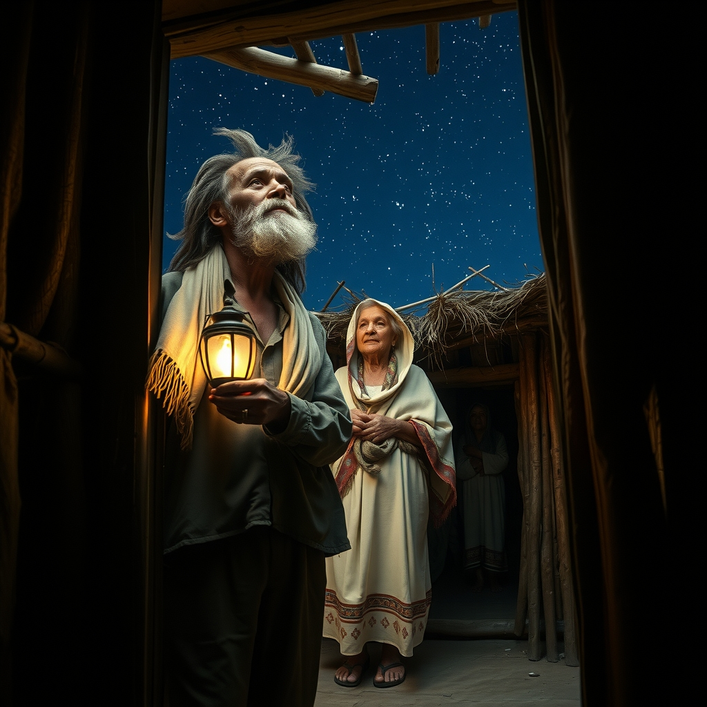
ወደ ሰማይ እያየ ‹መጠጥ ማለት ለእኔ ሞት ማለት ነው› አለ። ጊዜውም ሌሊት ነበር። ‹እንደዚህ የማሉበት ሌሊት ያልፋል› ብለው ወይዘሮ ጥሩነሽ መለሱለት።
Looking at the sky he said, 'For me, drink means death.' It was night. 'Nights of such vows pass,' Weyzero Tiruneshe replied.
Starts and ends on these words? ☐ yes ☐ cut early ☐ cut late